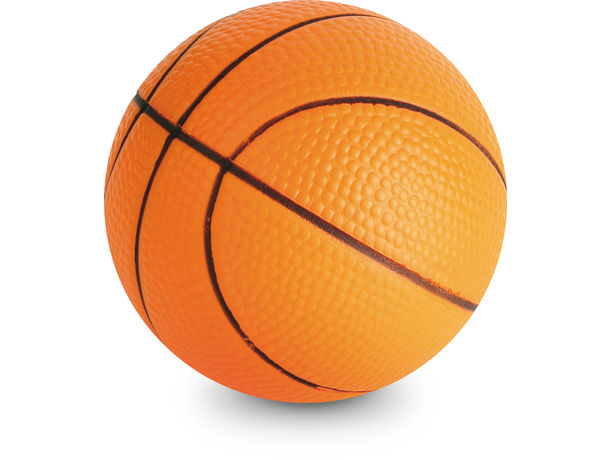
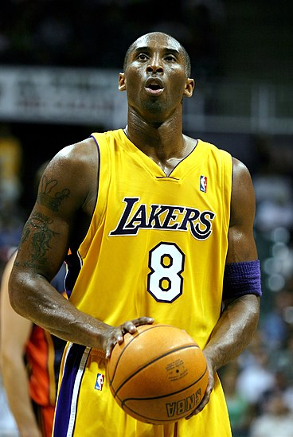

El baloncesto2 (del inglés basketball; de basket, 'canasta', y ball, 'pelota'), también conocido como básquetbol, basquetbol o simplemente básquet,n. 1 es un deporte de equipo, jugado entre dos conjuntos de cinco jugadores cada uno durante cuatro períodos o cuartos de diez minutos cada uno4 ―doce minutos cada cuarto en la NBA―. El objetivo del equipo es anotar puntos introduciendo un balón por la canasta, un aro a 3,05 metros sobre la superficie de la pista de juego del que cuelga una red. La puntuación por cada canasta o cesta es de dos o tres puntos, dependiendo de la posición desde la que se efectúa el tiro a canasta, o de uno, si se trata de un tiro libre por una falta de un jugador contrario. El equipo ganador es el que obtiene el mayor número de puntos. El contacto con la pelota se realiza con las manos. Los jugadores, también llamados baloncestistas, no pueden trasladarse de un lado a otro sujetando la pelota, sino botándola contra el suelo. El equipo en posesión del balón o atacante, intenta anotar puntos mediante tiros, entradas a canasta o mates, mientras que el equipo defensor busca impedirlo robando la pelota o efectuando tapones. Cuando un tiro hacia la canasta fracasa, los jugadores de ambos equipos intentan atrapar el rebote. James Naismith, un profesor canadiense de educación física, inventó el baloncesto en 1891 en la YMCA de Springfield, Massachusetts, Estados Unidos. El deporte ganó rápidamente popularidad y se expandió por las universidades y colegios norteamericanos a principios del siglo XX. La Federación Internacional de Baloncesto (FIBA) surgió en 1932 y el deporte debutó en los Juegos Olímpicos de verano en 1936. En 1946 se fundó la principal liga profesional de los Estados Unidos, la National Basketball Association (NBA), donde se formaron grandes jugadores que contribuyeron a la creciente popularidad del baloncesto: Wilt Chamberlain y Bill Russell en los años 1960 y, posteriormente, Kareem Abdul-Jabbar, Moses Malone, Larry Bird, Magic Johnson, Kobe Bryant, Michael Jordan y LeBron James, estos dos últimos considerados por muchos como los dos mejores jugadores de la historia.5 El baloncesto es uno de los deportes más practicados del mundo, con más de 450 millones de jugadores en 2013. Se juegan numerosas ligas y campeonatos en el mundo entero, sobre todo en Europa y más recientemente en Asia, donde el deporte ha despuntado en el siglo XXI. Las mujeres representan una buena parte de los practicantes, a pesar de una exposición menor en los medios del baloncesto femenino. Se han desarrollado algunas variantes, como el baloncesto en silla de ruedas para deportistas discapacitados, el streetball y el baloncesto 3x3. Existe una cultura específica surgida a partir del deporte que se expresa en la música, la literatura, el cine y los videojuegos.
JUGADOR DESTACADO
Kobe Bryant
Kobe Bean Bryant (Filadelfia, Pensilvania; 23 de agosto de 1978-Calabasas, California; 26 de enero de 2020)5 fue un baloncestista estadounidense que jugaba en la posición de escolta. Disputó veinte temporadas en la National Basketball Association (NBA), todas ellas en Los Angeles Lakers. Hijo del también exjugador de baloncesto Joe Bryant,6 está considerado como uno de los mejores baloncestistas de todos los tiempos. Ganó cinco campeonatos de la NBA con los Lakers y dos medallas de oro olímpicas con la selección estadounidense, fue dieciocho veces All-Star, quince veces All-NBA (once de ellas en el primer quinteto), doce veces miembro de los mejores quintetos defensivos, MVP de la Temporada en 2008,7 MVP de las Finales en 2009 y 20108 y máximo anotador de la liga en 2006 y 2007.910 En 2020 fue incluido de manera póstuma en el Salón de la Fama del Baloncesto.11 Bryant dio el salto a la NBA directamente desde el instituto Lower Merion de Filadelfia en 1996, año en el que fue seleccionado por los Charlotte Hornets en el Draft,12 pero fue traspasado inmediatamente a los Lakers. Junto con Shaquille O'Neal, llevó a su equipo a la consecución de tres títulos consecutivos de la NBA entre 2000 y 2002.13 Tras la salida de O'Neal en 2004, Bryant se convirtió en la estrella en solitario del equipo angelino y entre 2005 y 2007 logró varias plusmarcas de anotación. Después de perder las Finales en 2008, llevó a los Lakers a la obtención de dos campeonatos consecutivos en 2009 y 2010. Las lesiones lastraron sus últimos años de carrera y se retiró al término de la temporada 2015-16. Bryant ocupaba el cuarto lugar en la lista de máximos anotadores de la historia de la NBA, tanto en temporada regular como en Playoffs,14 y los 81 puntos que anotó ante los Toronto Raptors en enero de 2006 son la segunda mejor anotación de la historia de la NBA por detrás de los 100 puntos de Wilt Chamberlain en 1962.15 El 18 de diciembre de 2017 sus camisetas con los dorsales 8 y 24 fueron retiradas por los Lakers, siendo la primera vez en la historia de la NBA que un equipo retira dos números distintos a un mismo jugador.16 Ese mismo día se presentó su corto «Dear Basketball»,17 dirigido por Glen Keane, y en el que narró, en imágenes, la carta que escribió en The Players' Tribune (en) anunciando su retirada.18 Dicho corto ganó un Óscar en la categoría mejor corto de animación.1920 Falleció el 26 de enero de 2020 a los 41 años de edad en un accidente de helicóptero en la localidad californiana de Calabasas junto a otras ocho personas (incluido el piloto), y entre quienes se encontraba su hija Gianna Maria de 13 años.21